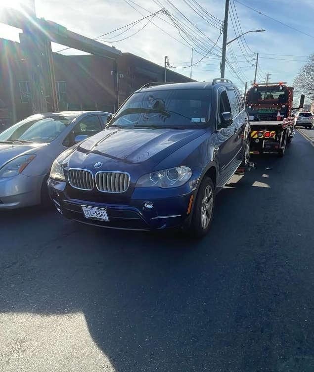
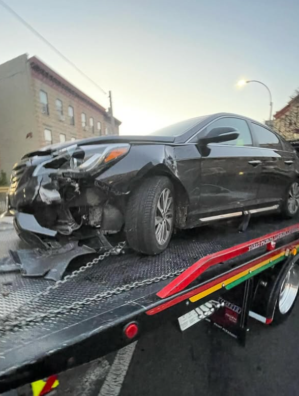
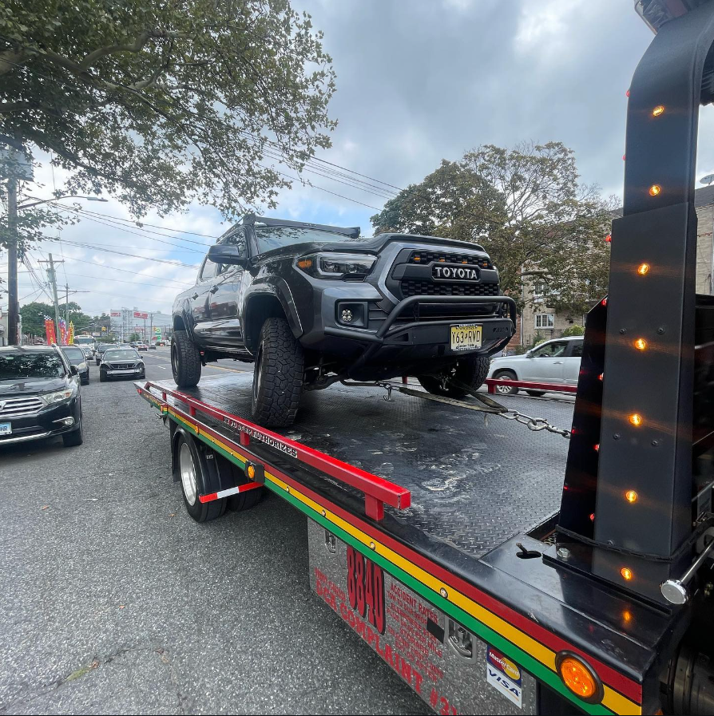
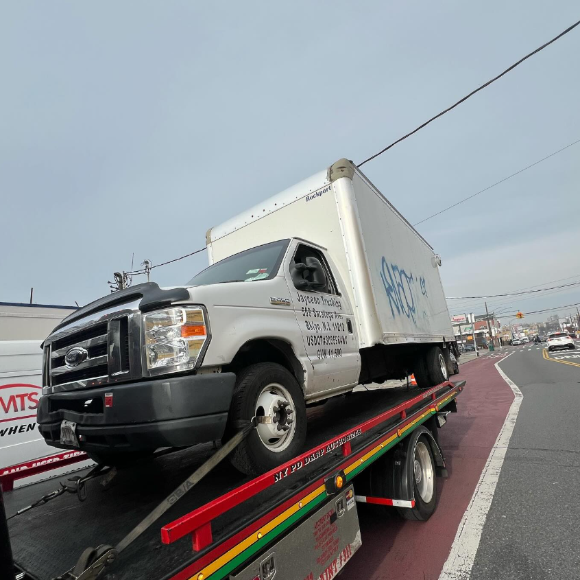
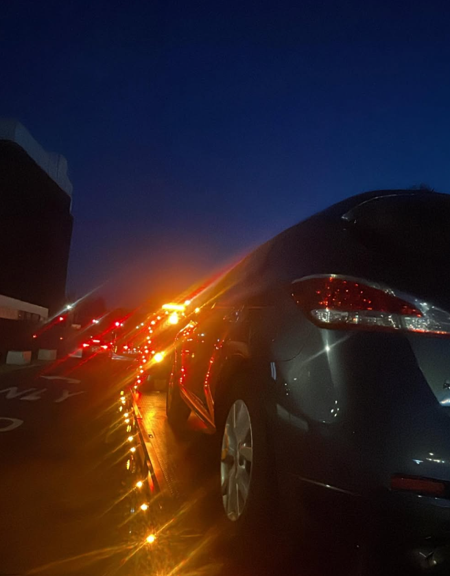
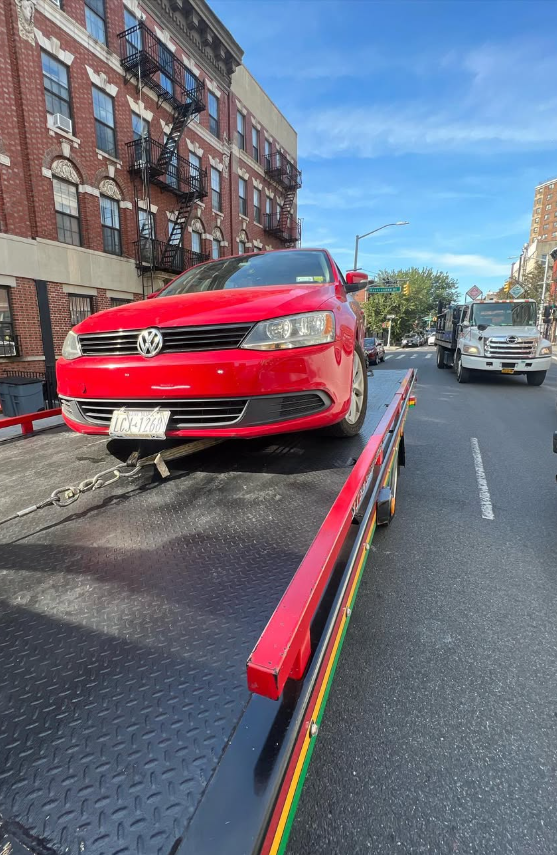

Flatbed towing
Secure transport for cars and SUVs
Ideal for AWD vehicles, damaged cars, low-clearance vehicles and anything that needs a full flatbed.
Professional vehicle towing and recovery built for New York streets. From everyday breakdowns to accident-damaged vehicles and larger trucks, JB Towing & Recovery handles the job with the right equipment and a careful approach.
From daily-driver breakdowns to accident recoveries and larger work vehicles, we use the right setup for the vehicle and the street.

Ideal for AWD vehicles, damaged cars, low-clearance vehicles and anything that needs a full flatbed.

For vehicles with wheel, suspension or body damage that need to be moved without making the situation worse.

Crossovers, SUVs, pickups and lifted vehicles handled with equipment sized for the job.

Flatbed transport for vans, work trucks and other commercial vehicles throughout Brooklyn and nearby areas.
Real towing and recovery work from Brooklyn and the surrounding New York area.


We serve Brooklyn and nearby boroughs and counties. Choose your area for local service details.
City towing takes more than a truck. Tight streets, traffic, damaged vehicles and busy pickup locations all require a careful setup and fast decisions.
Brooklyn is the primary service area, with coverage extending into Queens, Manhattan, the Bronx, Staten Island and nearby Nassau County depending on the job.
Yes. The supplied work photos show SUV, pickup and box-truck towing. When calling, share the vehicle year, make, model and condition so the proper equipment can be confirmed.
Yes. Flatbed transport is especially useful when a vehicle has body, wheel or suspension damage that makes normal towing difficult.
Your pickup location, destination, vehicle make/model, whether the vehicle rolls or steers, and a quick description of the issue.
For the fastest help, call with your pickup location, destination and vehicle details.